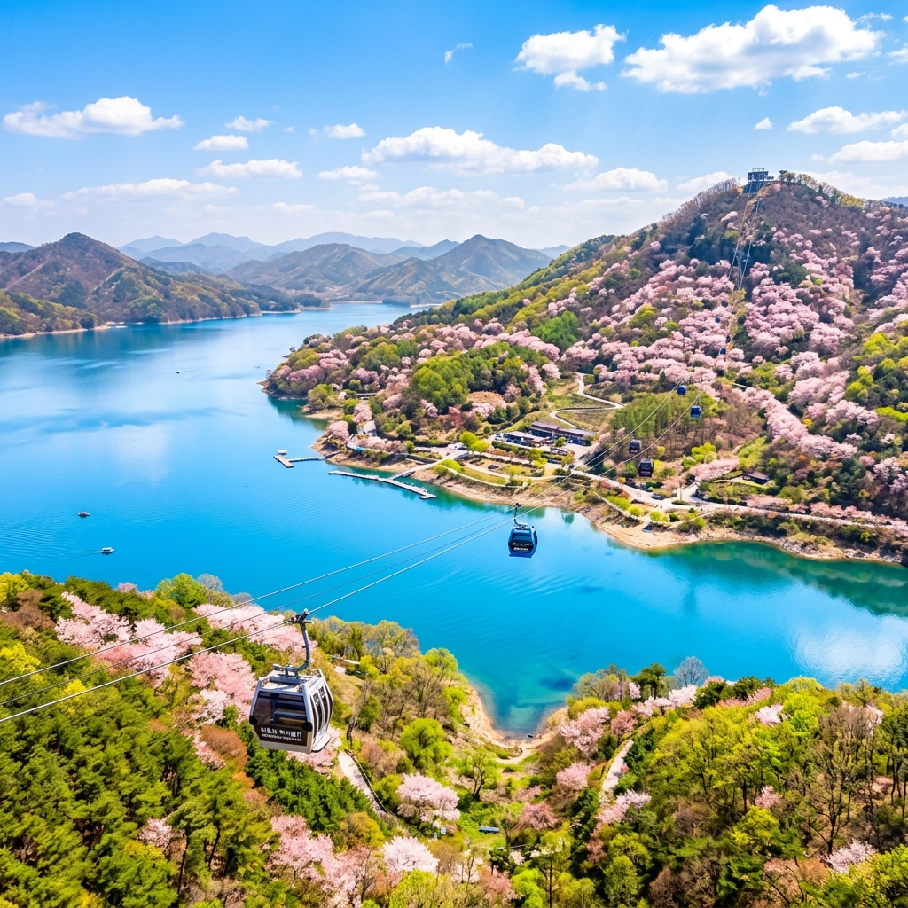
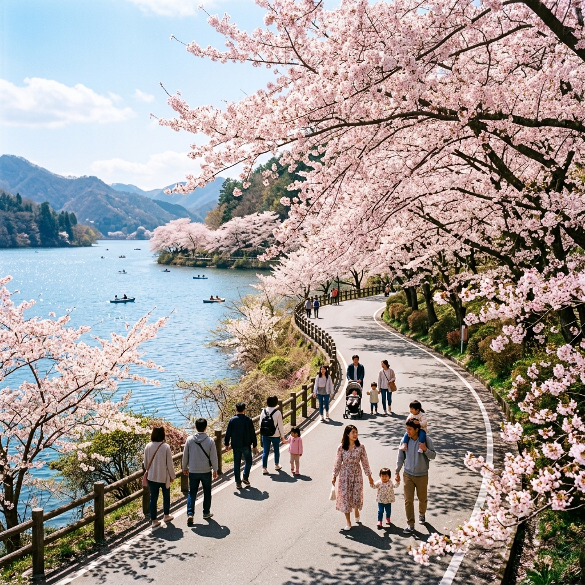
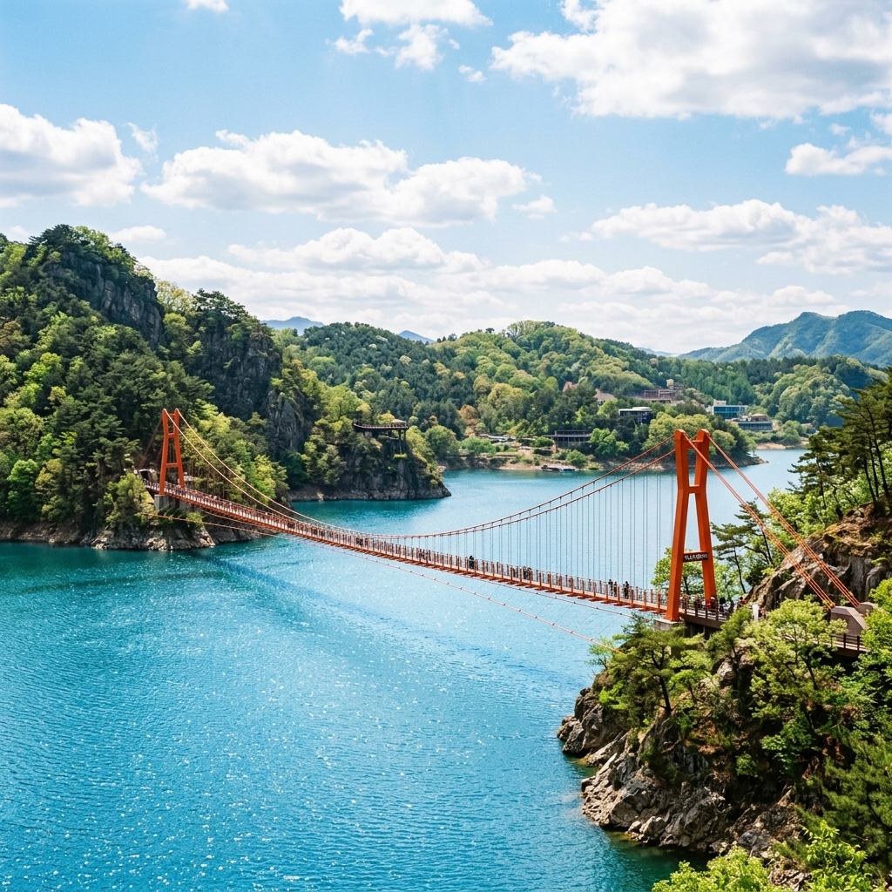

제천 청풍호 봄나들이 2026 실시간 — 비봉산 케이블카 예약 및 벚꽃 드라이브 코스 완벽 가이드
"내륙의 바다가 분홍빛 꽃물결로 넘실댑니다."
충북 제천의 명물, 청풍호반의 벚꽃이 드디어 절정을 맞이했습니다. 산과 호수가 어우러진 비경 덕분에 '내륙의 바다'라 불리는 청풍호는 4월이 되면 대한민국에서 가장 아름다운 드라이브 코스로 변신하는데요. 오늘은 비봉산 정상에서 내려다보는 환상적인 조망과 함께, 실패 없는 청풍호 봄나들이를 위한 실시간 개화 상황, 예약 꿀팁, 근처 맛집까지 꼼꼼하게 짚어드립니다.

▲ 케이블카 위에서 내려다보는 청풍호의 푸른 물결과 산등성이를 수놓은 벚꽃이 장관을 이룹니다.
1. 2026 제천 청풍호 봄나들이 가이드 (기간 & 장소)
제천 청풍호 봄나들이는 매년 4월 초순부터 중순까지 청풍면 일대에서 펼쳐지는 중부권 최대의 봄꽃 축제입니다. 특히 청풍문화재단지를 중심으로 이어지는 13km의 벚꽃길은 '환상의 드라이브 코스'로 유명하죠. 올해는 4월 4일부터 시작되어 19일까지 넉넉하게 이어질 예정입니다.
| 항목 |
상세 내용 |
| 행사 기간 |
2026. 04. 04.(토) ~ 04. 19.(일) [약 2주간] |
| 주요 장소 |
청풍문화재단지, 비봉산 케이블카, 옥순봉 출렁다리 일원 |
| 실시간 개화율 |
4/6 기준 95% (이번 주말이 최고의 피크 예고) |
| 주요 즐길거리 |
벚꽃 드라이브, 케이블카 조망, 산야초 마을 체험, 호수 미식 투어 |
주의사항: 청풍호반 도로는 왕복 2차선으로 축제 기간 주말에는 정체가 매우 심합니다. 가능하면 오전 10시 이전에 도착하여 주차 후 여유롭게 도보로 이동하는 것을 권장합니다.
2. 청풍호 여행의 백미 — 청풍호반 케이블카 & 비봉산 전망대
청풍호에 왔다면 반드시 경험해야 할 것이 바로 '청풍호반 케이블카'입니다. 물태리역에서 비봉산 정상까지 약 2.3km를 이어주는 이 케이블카는 9분간의 가파른 상승 끝에 360도로 펼쳐지는 다도해 같은 풍경을 선사합니다.
비봉산 정상(해발 531m)은 사방이 트여 있어 '제천의 알프스'라는 별명이 붙을 만큼 조망이 훌륭합니다. 특히 벚꽃 시즌에는 산자락마다 연분홍색 물감을 뿌려놓은 듯한 광경을 위에서 내려다볼 수 있어 감동이 두 배가 됩니다. 정상 카페에서 커피 한 잔을 마시며 호수 바람을 만끽해 보세요.
케이블카 이용 꿀팁
- 온라인 사전 예약 필수: 주말에는 현장 발권 시 대기 시간이 2~3시간을 훌쩍 넘길 수 있습니다. 반드시 네이버 예약 등을 통해 사전 구매하세요.
- 크리스탈 캐빈 추천: 바닥이 투명한 크리스탈 캐빈을 선택하면 발아래로 펼쳐지는 스릴 넘치는 벚꽃 뷰를 즐길 수 있습니다.
- 모노레일 교차 이용: 올라갈 때는 모노레일, 내려갈 때는 케이블카를 이용하는 패키지를 선택하면 지루할 틈 없는 관람이 가능합니다.

▲ 호수를 따라 끝없이 이어진 벚꽃 터널 아래를 달리는 드라이브는 청풍호 여행의 필수 코스입니다.
3. 아찔한 스릴과 비경 — 옥순봉 출렁다리
최근 제천의 새로운 핫플레이스로 떠오른 '옥순봉 출렁다리'도 놓쳐선 안 될 코스입니다. 낙타의 등처럼 굽이치는 옥순봉의 절경을 배경으로 호수 위 222m를 가로지르는 이 다리는 아찔한 높이와 흔들림으로 여행객의 심장을 쫄깃하게 만듭니다.
출렁다리를 건넌 뒤 이어지는 데크 산책로를 따라 걷다 보면 낙동강 상류의 맑은 공기와 함께 기암괴석이 어우러진 한국의 진경산수화를 눈앞에서 마주하게 됩니다. 벚꽃의 화려함과는 또 다른, 제천의 강인하고 수려한 자연미를 느낄 수 있는 곳입니다.

▲ 푸른 물줄기 위로 솟은 암봉과 오렌지빛 출렁다리가 조화를 이루어 멋진 인생샷을 만들어냅니다.
4. 실패 없는 제천 로컬 푸드 — 송어 비빔회 & 떡갈비
금강산도 식후경! 제천 여행에서 맛집 탐방을 빼놓을 수 없죠. 청풍호 주변에는 호수에서 갓 잡은 싱싱한 민물고기 요리와 정성 가득한 약채식 요리가 즐비합니다.
- 제천 송어 비빔회: 붉은 속살의 송어와 각종 야채, 콩가루, 초장을 버무려 먹는 비빔회는 고소함과 매콤함이 일품입니다.
- 청풍 떡갈비: 남녀노소 누구나 좋아하는 정공법 떡갈비! 부드러운 육질과 달곰한 양념이 어우러져 가족 단위 여행객에게 단연 인기입니다.
- 약채락 비빔밥: '약이 되는 채소를 즐겁게 먹는다'는 뜻의 제천 대표 브랜드 음식으로, 건강한 봄기운을 채우기에 안성맞춤입니다.
5. 인파 피하는 드라이브 & 주차 전략
성공적인 봄나들이를 위해 가장 중요한 것은 동선 관리입니다.
- 북쪽 진입로 지양: 제천 시내에서 들어오는 길보다 남쪽 수산면 쪽에서 거꾸로 올라오는 경로가 상대적으로 덜 막힙니다.
- 청풍문화재단지 주차장: 광장 앞은 늘 혼잡합니다. 조금 더 올라가 비봉산 케이블카 전용 주차장이나 임시 주차장을 이용하는 것이 정신 건강에 이롭습니다.
- 야간 관람 활용: 벚꽃길 곳곳에 야간 조명이 설치되어 있어 밤 9시까지도 아름다운 야간 벚꽃을 감상할 수 있습니다. 숙박을 하신다면 밤 산책을 강력 추천합니다.
6. 함께 가기 좋은 제천 1박 2일 추천 코스
당일치기로는 아쉽다면 제천의 숨은 명소들을 엮어 1박 2일 여정을 짜보세요.
1일차: 청풍호반 벚꽃길 드라이브 → 청풍호반 케이블카 (비봉산 정상 점심) → 옥순봉 출렁다리 → 청풍 한우/송어 저녁
2일차: 의림지 (우리나라 최고 저수지 산책) → 제천 배론성지 → 중앙시장 투어 (빨간 오뎅 필수!) → 귀가
안내 및 주의사항
본 포스팅은 제21회 제천 청풍호 봄나들이 공식 일정과 현지 실시간 상황을 바탕으로 작성되었습니다. 벚꽃 개화는 기온 변화에 따라 다소 차이가 있을 수 있으며, 주말에는 교통 통제가 이루어질 수 있으니 방문 전 제천시청 관광 홈페이지를 확인하시기 바랍니다. 특히 케이블카와 출렁다리는 대기가 길 수 있으므로 시간적 여유를 가지고 방문해 주세요.
👉 함께 읽으면 좋은 글: [벚꽃 엔딩이 아쉽다면? 4월 중순 겹벚꽃 명지 TOP 5]
태그:
#제천청풍호벚꽃축제
#청풍호봄나들이
#비봉산케이블카
#옥순봉출렁다리
#제천가볼만한곳
#청풍호드라이브
#2026벚꽃실시간
#제천맛집
#청풍문화재단지
#충북봄여행지
#인생샷명소
#충북드라이브코스
#송어비빔회
#가족나들이추천
#중부권벚꽃명소